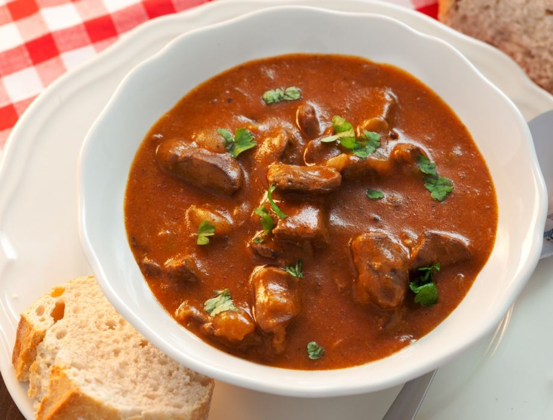

Stew

Gulasz z kurczaka jako wersja light mieska
Bez odpowiedniej podazy bialka w diecie, mozna pomazyc o przyrostach
Czowiek nie rosnie z powietrza
Gulasz swietna alternatywa do ryzu - podaz wegli rowniez jest wazna
- Kurczak
- Maka
- Przyprawy
- Milosc i szacunek
- Umyc kurczaka
- Pokroic w kostke i podsmazyc w przyprawach
- Do garnuszka wode, a do wody kurczaczka
- Gotujemy z 45 minutek az miesko kruchutkie
- Podajemy z ryzem bo trzeba jesc